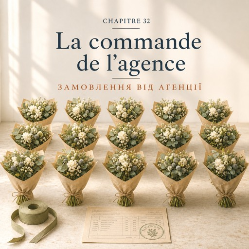

Le lundi 15 décembre — понеділок, 15 грудня
Trois bougies sur la couronne de la vitrine. Il en reste une.
Три свічки на вінку у вітрині. Лишилася одна.
À dix heures, Solange pose une feuille imprimée sur le comptoir.
О десятій Соланж кладе на прилавок роздрукований аркуш.
— Il y a un message. Il vient du site.
— Тут повідомлення. Воно з сайту.
Karim lève la tête.
Карім підводить голову.
— On a un site ?
— У нас є сайт?
— Depuis 2016. C'est le neveu d'Émile qui l'a fait.
— Із 2016-го. Його зробив небіж Еміля.
— Et personne ne l'a jamais utilisé.
— І ним ніхто ніколи не користувався.
— Aujourd'hui, si.
— Сьогодні скористалися.
Natalia regarde la page sur le téléphone de Karim : une photo de la vitrine, des lettres vertes, un formulaire avec trois cases.
Наталя дивиться на сторінку в телефоні Каріма: фото вітрини, зелені літери, форма з трьома полями.
La photo date d'un été où elle n'était pas encore en France.
Фото зроблене того літа, коли її ще не було у Франції.
Natalia lit à voix haute. Agence Vertigo, rue Charlot, quatrième étage.
Наталя читає вголос. Агенція «Вертиго», вулиця Шарло, четвертий поверх.
Ils veulent un bouquet par semaine pour l'accueil, tous les lundis avant neuf heures.
Вони хочуть букет раз на тиждень на ресепшн, щопонеділка до дев'ятої.
Et, pour demain soir, quinze petits bouquets pour les tables : ils font leur soirée de fin d'année.
І на завтрашній вечір — п'ятнадцять маленьких букетів на столи: у них новорічна вечірка.
— Demain soir ? Ils demandent ça aujourd'hui ?
— Завтра ввечері? І вони просять це сьогодні?
— Les bureaux, c'est toujours comme ça. Répondez-leur.
— Офіси завжди так. Відпишіть їм.
Solange parle lentement, comme au premier jour.
Соланж говорить повільно, як першого дня.
— Ce n'est pas un client, c'est une entreprise. Ils ne paient pas à la caisse.
— Це не клієнт, це підприємство. Вони не платять на касі.
— Ils paient par virement, à la fin du mois, sur facture.
— Вони платять переказом, наприкінці місяця, за рахунком.
— Un papier avec la date, le détail, le prix hors taxes, la TVA et le total.
— Папір із датою, переліком, ціною без податку, ПДВ і підсумком.
— Sur les fleurs, la TVA est à dix pour cent.
— На квіти ПДВ — десять відсотків.
— Et je mets quoi comme prix ?
— А яку ціну мені ставити?
— Cinquante euros hors taxes le bouquet d'accueil. Cinquante-cinq toutes taxes comprises.
— П'ятдесят євро без податку за букет на ресепшн. П'ятдесят п'ять із податком.
— Les petits bouquets, douze euros pièce, hors taxes.
— Маленькі букети — дванадцять євро за штуку, без податку.
Natalia calcule. Quinze fois douze, cent quatre-vingts.
Наталя рахує. П'ятнадцять по дванадцять — сто вісімдесят.
Elle prend le cahier de commandes sur son étagère et écrit tout : la date, l'adresse, l'étage, le nom de la personne, l'heure.
Вона бере зошит замовлень зі своєї полиці й записує все: дату, адресу, поверх, ім'я людини, годину.
Puis, en dessous, les deux lignes de prix.
А під тим — два рядки з цінами.
— Il faut leur donner un numéro. Le SIRET est sur le tampon, dans le tiroir.
— Їм треба дати номер. SIRET є на печатці, в шухляді.
À onze heures, elle appelle.
Об одинадцятій вона дзвонить.
— Bonjour, madame. Le Jardin d'Émile, rue de Bretagne. C'est pour votre demande de ce matin.
— Добрий день, мадам. «Сад Еміля», вулиця Бретань. Це щодо вашого запиту сьогодні вранці.
— Oui. Quinze centres de table pour demain, et le bouquet d'accueil toutes les semaines à partir du vingt-deux.
— Так. П'ятнадцять композицій на столи на завтра, і букет на ресепшн щотижня, починаючи з двадцять другого.
Un silence plus long.
Довша тиша.
— Douze euros hors taxes le petit, cinquante le grand. La facture arrive à la fin du mois. Vous réglez par virement.
— Дванадцять євро без податку за маленький, п'ятдесят за великий. Рахунок надійде наприкінці місяця. Оплачуєте переказом.
Un silence court.
Коротка тиша.
— Non, pas d'acompte. On vous fait confiance.
— Ні, завдатку не треба. Ми вам довіряємо.
Elle raccroche. Elle a les oreilles chaudes.
Вона кладе слухавку. У неї горять вуха.
Karim la regarde par-dessus le comptoir.
Карім дивиться на неї через прилавок.
— « On vous fait confiance. » Sérieux ?
— «Ми вам довіряємо». Серйозно?
— C'est sorti tout seul.
— Само вискочило.
— Garde-la, cette phrase.
— Лиши її собі, цю фразу.
L'après-midi, elles préparent. Quinze fois la même chose : trois renoncules, deux anémones, une branche d'eucalyptus, un ruban.
По обіді вони готують. П'ятнадцять разів те саме: три ранункулюси, дві анемони, гілка евкаліпта, стрічка.
Quinze fois, ce n'est pas quinze bouquets, c'est un seul geste répété.
П'ятнадцять разів — це не п'ятнадцять букетів, це один рух, повторений.
Un quart d'heure avant la fermeture, Solange demande si elle peut rester une heure.
За чверть години до закриття Соланж питає, чи може вона лишитися на годину.
Le cours de danse commence à huit heures.
Заняття з танців починається о восьмій.
À huit heures et quart, Natalia noue le dernier ruban.
О чверть на дев'яту Наталя зав'язує останню стрічку.
Les quinze bouquets attendent en rang dans la chambre froide, comme une classe.
П'ятнадцять букетів чекають рядком у холодильній камері, як клас.
Elle éteint la guirlande. Dans la vitrine, la couronne attend dimanche.
Вона вимикає гірлянду. У вітрині вінок чекає неділі.